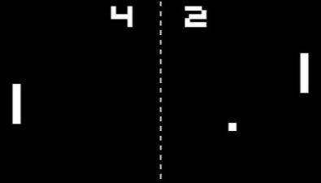
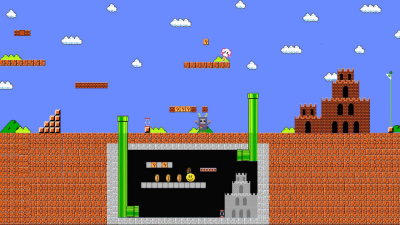
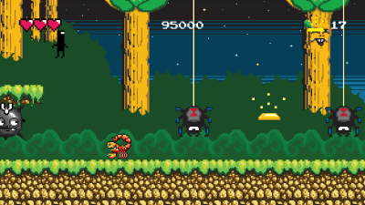
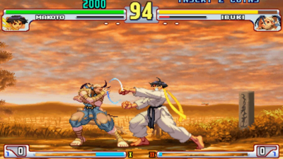
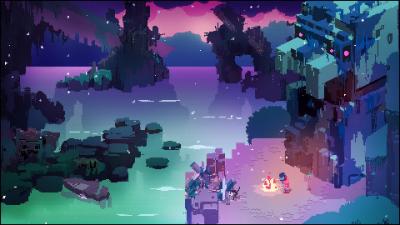

Pixel art has been an integral part of video game presentation from
its inception. Amongst the different eras of gaming, there are many distinct
styles and it's very intriguing to see the development of pixel art over time.
From the advent of arcades to the creations in modern consoles, pixel art is
an important benchmark in how video games as a whole have progressed in
how they present their stories and gameplay.

The Early Years | 1972-1983
The early years of pixel art were a bit rough due to technological restrictions and the general lack of experience most developers had with games in motion. This had mainly led to extremely simple blocks attempting to resemble objects and was heavily dependent on the imaginations
of players to fill in the blanks.
Notable users of this style: Magnavox Odyssey, ColecoVision, Atari 2600
The 8-Bit Era | 1983-1987
Though still decently limited in a technological sense, it was clear that developers had grown more ambitious in their attempts at engaging their audience with recognizable characters. This led to appealing game worlds with background details, hidden areas and limited attempts at
replicating cinematic cutscenes reminiscent of movies(at the time). The shortcuts taken to create stories led to the development of many modern gaming stories.
Notable users of this style: Nintendo Entertainment System (NES), Sega Master System, Game Boy


The 16-Bit Era | 1987-1993
As arcades had reached their peak, console graphics had advanced to the point that they could properly replicate what the arcades had. The game creators had refined pixel art to the point that they felt comfortable to venture away from their arcade origins and created their own
distinct game worlds and can hold up with games releasing currently. Some games even attempted to blend pixel art with early renditions of 3D to varying areas of effectiveness.
Notable users of this style: Super Nintendo Entertainment System (SNES), Sega Genesis, Neo Geo
The Slow Downfall of Pixel Art | 1993-2006
As consoles like the Playstation and Nintendo 64 worked diligently to advance the concept of using 3D models to represent characters, pixel art began to slowly fall from popularity. From this point on, pixel art didn’t notably advance very much with most games simply refining art
from previous consoles as opposed to creating a whole new style for themselves. There were a few stubborn companies who refused to utilize the three dimension until it was perfected but those companies had often lost prominence in the industry because of that choice.
Notable users of this style: Sega Dreamcast, Gameboy Advance


Modern Day | 2006-Present
Despite the third dimension establishing its dominance in game presentation, pixel art still persists albeit in a smaller amount than its heyday. Nowadays, pixel art has been mainly relegated to handheld consoles and indie games that go for a “retro” style. Despite its
diminishing presence, pixel art is still evolving having worlds that rival and even surpass their polygonal counterparts.
Notable users of this style: Nintendo DS/3DS, Nintendo Switch
The development of pixel art has always been a captivating prospect.
Though starting as a workaround for technical limitations, it was utilized and
refined to the point that it was ubiquitous in gaming culture. The highs and
lows it faced eventually resulted in developers using pixel art as an artistic
choice instead of a shortcut for primitive tech.